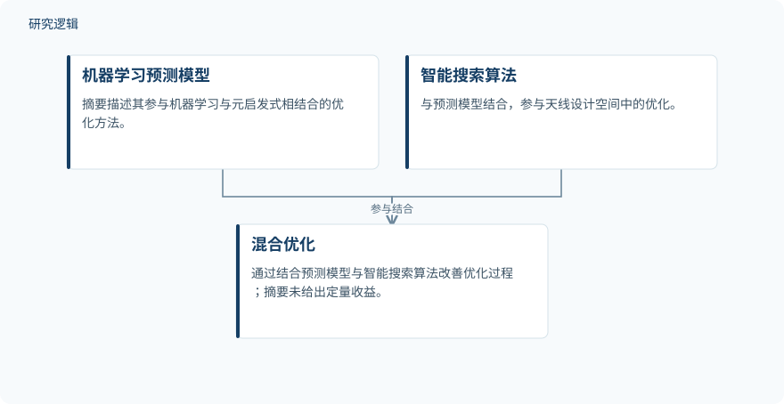

摘要解读
机器学习辅助天线设计与优化：代理建模、主动学习及智能优化综述
Machine Learning-assisted Antenna Design and Optimization: A Comprehensive Review of Surrogate Modeling, Active Learning, and Intelligent Optimization
解读更新 2026-10-16 15:45 · 依据公开摘要整理，未核验全文细节
天线设计变量增多时，反复调用全波电磁仿真的计算负担如何降低？这篇综述围绕代理建模、智能搜索与主动学习，梳理机器学习辅助天线优化的技术演进，阅读价值在于理解计算效率与数据依赖之间的关系。
文章目录
高维天线设计为何面临仿真成本压力
无线通信的发展不断提高对紧凑、宽带、高性能及面向特定应用天线的需求。传统设计依赖解析公式、经验关系、参数扫描和反复进行的全波电磁仿真；随着设计变量增加，计算成本随之上升。遗传算法（GA）、粒子群优化（PSO）等元启发式方法因此被广泛研究，用于探索复杂的天线设计空间。
沿技术演进比较设计策略与数据需求
这是一篇综述，而非摘要中报告了新天线实验的研究。作者梳理了从传统方法、元启发式方法，到机器学习、混合方法及主动学习驱动方法的演进，并从设计策略、优化技术、仿真需求、数据依赖和计算效率等方面审视已有研究。
摘要明确区分了相关方法的作用：机器学习与深度学习用于性能预测、逆向设计和代理辅助优化；混合方法将预测模型与智能搜索算法结合；主动学习则选择性获取信息量较高的仿真样本。综述特别关注代理建模与自适应样本选择如何减少昂贵的全波仿真。
依据摘要整理的混合优化关系示意


仅展示摘要明确陈述的预测模型与智能搜索结合关系，不代表论文原图，也不补充具体算法配置或执行时序。
下载 SVG图示关系说明
实线表示相邻阶段的信息流，虚线表示跨阶段联系或反馈。
机器学习预测模型 → 混合优化：参与结合；智能搜索算法 → 混合优化：参与结合
减少仿真调用，仍须面对训练数据依赖
摘要指出，机器学习方法能够减轻重复电磁仿真的计算负担，但其有效性往往依赖数量充足、具有代表性的仿真数据集。减少后续仿真计算，并不意味着摆脱数据需求：这是理解这些方法适用条件的重要线索。
对于混合方法，摘要给出的概括是预测模型与智能搜索的结合可进一步改善优化过程；主动学习则提供了选择性获取仿真样本的途径。综述最终强调，高维微带天线优化仍需要更自主、数据高效且仿真高效的框架。这是作者提出的需求，不是摘要已经验证实现的效果。
摘要不足以判断定量收益与验证边界
本次解读仅依据完整摘要。摘要未交代纳入研究的数量、检索与筛选规则、各研究的数据规模、具体天线配置、比较基线及验证范围，也未提供误差、仿真调用量或计算时间的定量结果。因此，不能据此判断哪类算法总体更优，也不能确认其结论能否推广到不同设计空间；这些信息仍需查阅正文，而非认定论文未开展相关工作。
阅读启发：把数据成本与优化收益放在一起看
阅读启发：对于关注逆向设计与结构优化的读者，可沿着“预测模型依赖什么数据、搜索如何调用模型、主动学习如何选择样本”继续阅读。尤其值得核对的是，文中如何界定数据代表性，以及比较计算效率时是否同时考虑数据生成与优化阶段的成本。这些是由摘要引出的阅读问题，并非已经得到验证的跨领域结论。
以上为本站阅读启发与建议，不是论文已验证的结论。